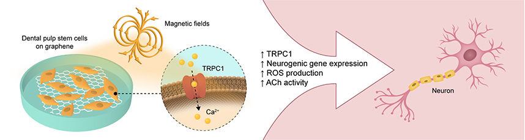

A/P Rosa's group receives Best Graphical Abstract award from eCells & Materials
A visual summary of research from the group was selected by the editorial team of eCells & Materials as the best graphical abstract published in the journal.

eCells & Materials (eCM) — a peer-reviewed open-access journal specialising in tissue engineering, biomaterials, and regenerative medicine — recognised a graphical abstract from A/P Rosa's group as the best submitted in its category. The award acknowledges that the visual effectively communicated the study's core findings in dental pulp tissue biology in a clear, accurate, and accessible way. Graphical abstracts have become a central feature of contemporary scientific publishing, serving as the primary visual entry point to research for readers navigating an increasingly vast literature.
Creating an effective graphical abstract requires translating complex experimental findings into a single image that is both scientifically accurate and immediately intelligible to a broad scientific audience. The recognition from eCM reflects not only the quality of the underlying science, but also the group's commitment to clear science communication — a skill that is increasingly valued as research must reach readers across disciplines and backgrounds.
Science that can be seen and understood at a glance is science that travels further.
Founded in 1999, eCells & Materials is published by the AO Foundation and is one of the leading open-access journals in biomaterials, tissue engineering, and regenerative medicine research. It was an early adopter of the open-access model, making influential research freely available to scientists and clinicians worldwide. The journal maintains a high standard of peer review and has published landmark studies on scaffold design, stem cell biology, and tissue regeneration.